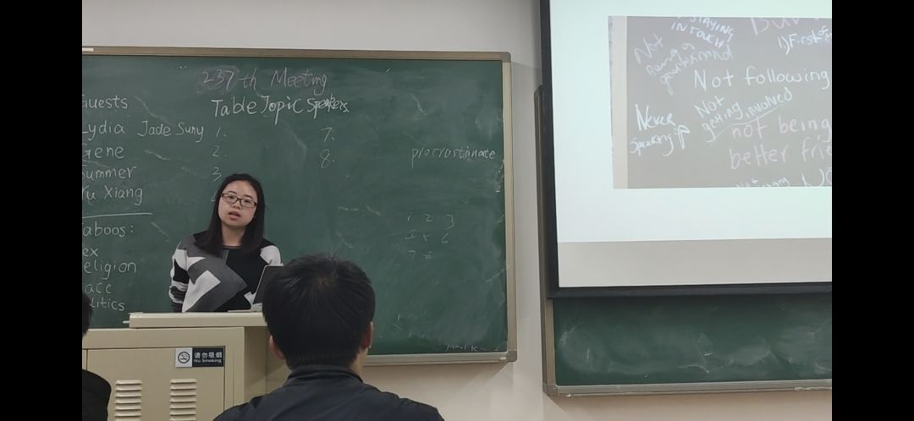
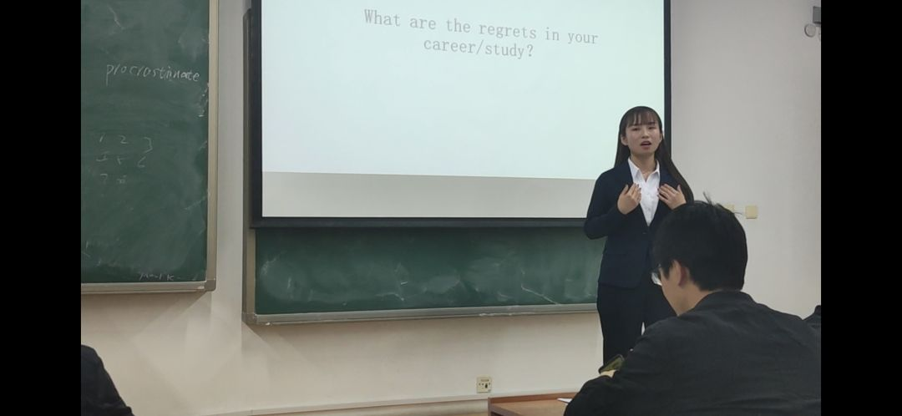
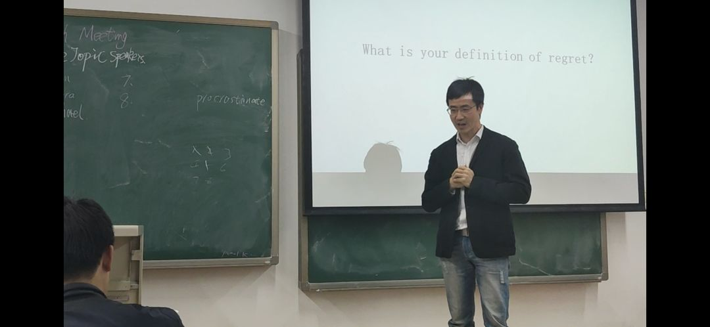
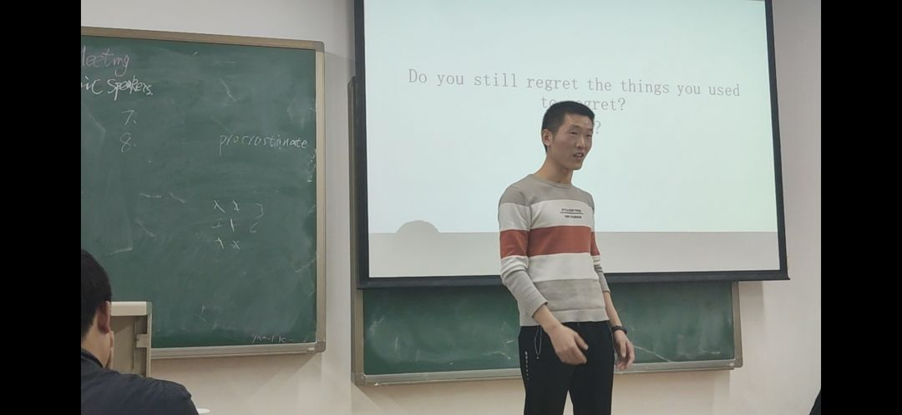
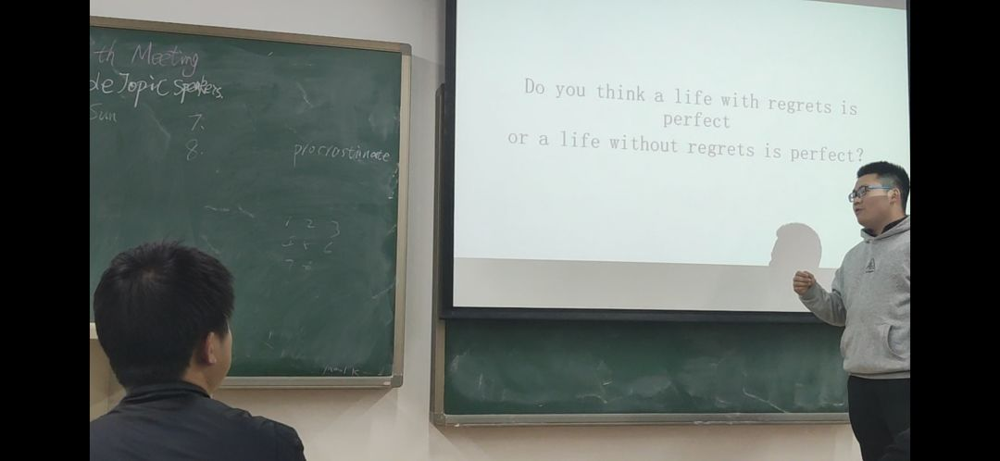
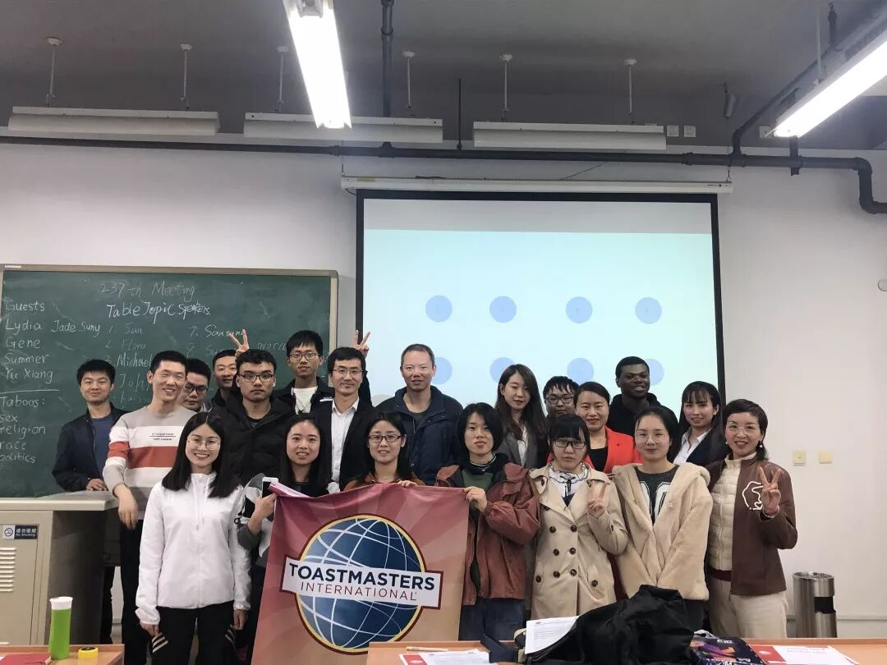

会议回顾
Hi
昨天的会议，在一片掌声中圆满结束，你问我精不精彩，我是托，我当然说那是相当精彩。一分钟精心剪辑的视频，快速回顾一下精彩时刻吧~
昨天来参加会议的有二十多人，有些人来自北航大运村，但更多的人来自下班的路上，来自晚高峰的北京地铁口，甚至有几位会员晚饭都来不及吃，下班后便急匆匆过赶过来参加会议，这说明了什么？
不言而喻，这说明了我们俱乐部帅哥美女云集很是吸引人，为此他们拼了老命也要来参加，这是对北航头马俱乐部最好的肯定。在此也特别谢谢你们，谢谢你们一直以来的支持与肯定。
——鲁迅
这一次会议的主题是《Regret》,解释为“遗憾”。在table topic 环节，在Ellen大法官的主导下，看看大家需要在20s内回答的问题是什么~
<< 滑动查看下一张图片 >>





不得不说，问题还是有些难度的，猜一猜，最终的冠军是上面的谁（提示：新面孔）~
那，谁是备稿演讲大赢家？
这一次的备稿演讲，也祝贺Ada得到了best prepared speaker 称号，她的演讲题目是：《My way to tackle anxiety in life》。不得不说，Ada真是有点小幽默，她十分真切地说道：“because I don't know how to spend money, so I saved much money”。这么傲娇地人，你见过几个？起来听一听吧~

最后，来一张合照总结~
下周五，我们接着精彩！
编辑|Chen
文案|Chen
视频|Cynthia
答案|瞎掰的啦